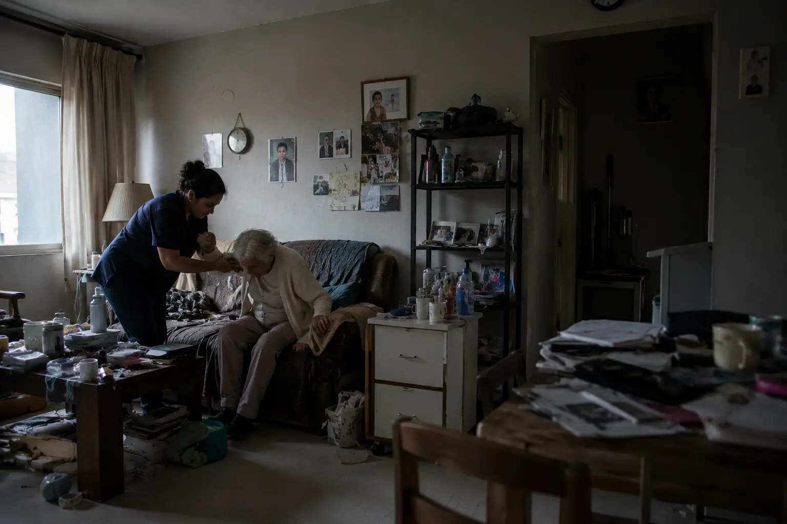
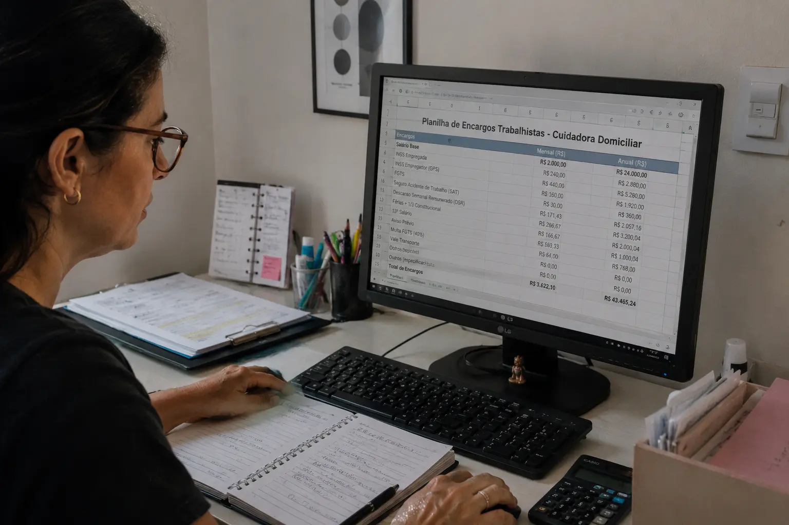
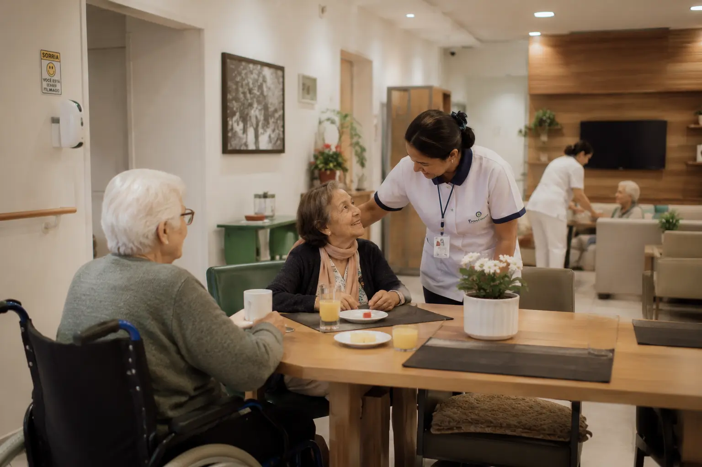
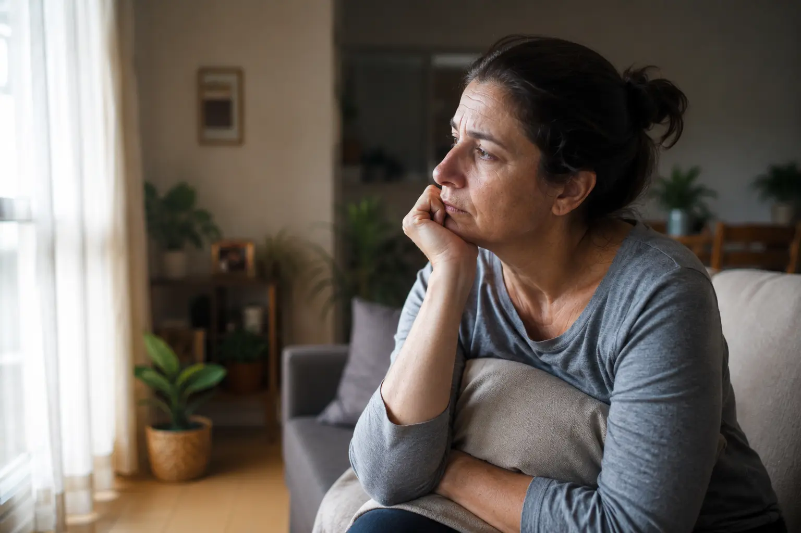

Uma análise honesta — com o custo real, os encargos que ninguém calcula, os riscos que poucos antecipam e o momento em que o cuidado domiciliar deixa de ser suficiente.

A primeira vez que a família pesquisa por cuidadora, a busca costuma ser direta: salário, horário, referências. A conta parece simples. Depois de alguns meses, a percepção muda.
O cuidado domiciliar envolve uma cadeia de custos, responsabilidades e riscos que raramente aparecem na primeira estimativa. E quando aparecem, costumam chegar de forma inconveniente — uma notificação trabalhista, um acidente à noite sem cobertura, uma progressão de dependência que exige mais do que uma pessoa pode oferecer sozinha.
Este artigo existe para colocar tudo isso na mesa — com transparência, sem alarme e com o respeito que o assunto merece.
Não existe decisão errada quando ela é feita com clareza. O que existe são famílias que decidem com informação parcial — e que, mais tarde, precisam refazer escolhas em situações de maior pressão. Este guia foi escrito para que isso não aconteça com você.
Entender qual estrutura faz mais sentido — cuidadora em casa ou residencial — depende de variáveis que vão além do custo. A SAFE ILPIS faz essa análise gratuitamente.
Conseguimos descontos exclusivos de até R$ 500/mês em mais de 300 residenciais credenciados em São Paulo para famílias que chegam pela nossa orientação.
Quando a família pesquisa por cuidadora, o número que aparece primeiro é o salário. Mas entre o salário e o custo operacional real existe uma diferença que o Código Trabalhista resolve — e que o empregador, frequentemente, descobre tarde demais.
A tabela abaixo apresenta o custo operacional mensal de uma cuidadora domiciliar contratada formalmente em São Paulo, com base no piso salarial da categoria e nas obrigações legais em vigor para 2026:

| Item | Base legal | Valor estimado |
|---|---|---|
| Piso salarial da categoria (SP) | Convenção coletiva 2026 | R$ 1.900 |
| Cesta básica | Benefício obrigatório da categoria | R$ 150 |
| INSS patronal (20%) | CLT Art. 22 | R$ 380 |
| FGTS (8%) | Lei 8.036/90 | R$ 152 |
| 13.º salário proporcional | 1/12 ao mês | R$ 158 |
| Férias + 1/3 proporcional | CLT Art. 129 | R$ 211 |
| Vale-transporte | Lei 7.418/85 | R$ 220 |
| ⚠️ Fins de semana, feriados e noites — quem cobre? | Custo extra | |
| Total operacional estimado (1 cuidadora, turno diurno) | R$ 3.180 | |
Atenção: esse valor contempla apenas o turno diurno, de segunda a sexta. Não estão incluídos: alimentação da cuidadora, adaptações residenciais, medicamentos, aluguel, energia elétrica, gás, agua, plano de saúde, dentista, higiene pessoal, fraldas, equipamentos, horas extras, adicionais noturnos, substituição em caso de atestado ou férias, nem qualquer custo de emergência.
Uma cuidadora trabalha um turno. A dependência, em geral, não respeita horários. Quando somamos todos os custos invisíveis do cuidado domiciliar, o cenário muda significativamente:
| Item | Estimativa mensal | Observação |
|---|---|---|
| Aluguel / moradia | R$ 2.000 | Média nacional 2026 |
| Alimentação | R$ 600 | Pessoa idosa + cuidadora |
| Água, luz, gás | R$ 150 | Consumo médio domiciliar |
| Medicamentos | R$ 400–R$ 1.200 | Depende do perfil clínico |
| Fraldas e higiene | R$ 300–R$ 600 | Conforme grau de dependência |
| Adaptações físicas | variável | Barras, rampas, cama hospitalar |
| Plano de saúde | R$ 600–R$ 2.000 | Variável por operadora e faixa etária |
| Cobertura fins de semana e noites | R$ 1.500–R$ 4.000+ | Segunda cuidadora ou plantão |
| Emergências e imprevistos | Não previstos — impacto imediato | |
Somando encargos operacionais, moradia e os custos diretos do cuidado, as famílias que optam pelo cuidado domiciliar para pessoas com Grau 2 de dependência frequentemente ultrapassam R$ 10.000 mensais — antes do primeiro imprevisto.
Para uma comparação clara com os custos de um residencial sênior, acesse nosso artigo Quanto custa uma casa de repouso no Brasil em 2026.
O custo total do cuidado domiciliar não é fixo. Ele cresce junto com a complexidade do cuidado necessário — e essa progressão raramente é linear ou previsível.
Para entender em qual grau de dependência seu familiar se enquadra, acesse nosso guia Como avaliar o grau de dependência de uma pessoa idosa. O grau determina não só o custo, mas o tipo de estrutura de cuidado adequado.
A relação entre família e cuidadora se estabelece num território sensível: o da confiança, da gratidão, da afetividade construída ao longo dos meses. Isso é real — e é belo. Mas não substitui o vínculo legal.
O Brasil registra crescimento consistente no número de ações trabalhistas envolvendo cuidadoras domiciliares. Em grande parte dos casos, a informalidade não foi uma escolha deliberada — foi uma consequência da naturalidade com que o vínculo se desenvolveu dentro do ambiente doméstico.
Em caso de ação trabalhista, a Justiça pode reconhecer até 5 anos de vínculo não registrado — com FGTS, INSS, multas e verbas rescisórias retroativas.
Empregadores domésticos são obrigados ao eSocial. Irregularidades geram autuações automáticas e podem comprometer certidões e benefícios previdenciários da família.
Acidentes de trabalho ocorridos na residência são responsabilidade do empregador doméstico. Sem cobertura formalizada, a família assume integralmente o custo.
A saída de uma cuidadora — por qualquer motivo — gera custo imediato de rescisão e cria uma lacuna de cuidado que pode ser crítica dependendo do grau de dependência da pessoa.
Trabalho após as 22h gera adicional noturno de 20% por lei. Em escalas 24h ou 12×36, esse valor precisa estar incluído no cálculo — e raramente está.
O vínculo afetivo construído com a cuidadora é valioso — mas não define a relação legal. Gratidão e informalidade, juntas, criam passivo que aparece quando a relação termina.
Uma observação importante: este artigo não pretende gerar insegurança sobre o cuidado domiciliar. A imensa maioria das relações entre cuidadoras e famílias é construtiva e saudável. O objetivo aqui é garantir que ela esteja também formalmente protegida — para o bem de todos os lados.
"Contratar cuidadora em casa muitas vezes se transforma em uma etapa temporária dentro de uma jornada de cuidado que futuramente exigirá uma estrutura mais completa."— Equipe SAFE ILPIS
Existe uma questão que raramente entra nas comparações entre cuidado domiciliar e residencial: a mesma profissional, no mesmo horário, produz resultados significativamente diferentes em cada um desses ambientes.
Não porque a cuidadora seja diferente. Mas porque o ambiente ao redor dela é completamente outro.

Num residencial bem gerido, a cuidadora tem supervisão técnica, rotinas claras, equipe de apoio, suporte multidisciplinar e uma cultura de cuidado que sustenta a qualidade do serviço mesmo nos dias difíceis.
No ambiente domiciliar, ela está sozinha. Sem supervisão imediata, sem protocolo de emergência, sem colega para acionar num momento crítico. O cuidado existe — mas funciona sem a estrutura que o sustenta.
Coordenação técnica presente avalia a qualidade do cuidado e intervém quando necessário.
Horários de medicação, refeições, higiene e atividades — seguidos com consistência e registro.
Quando uma profissional enfrenta dificuldade, há outra pessoa para apoiar — imediatamente.
Nutricionistas, fisioterapeutas e enfermeiros trabalham em conjunto, com visão integrada da pessoa.
Situações críticas têm resposta imediata, documentada e treinada — não depende de uma decisão individual.
A profissional tem suporte, troca e progressão de carreira — o que reduz rotatividade e melhora o vínculo.
Esta comparação não existe para forçar uma conclusão. Existe para que a família tenha clareza sobre o que cada modelo oferece — e o que ele exige.
| Dimensão | Cuidado em casa | Residencial sênior |
|---|---|---|
| Supervisão técnica contínua | Ausente ou esporádica | Presente em todos os turnos |
| Cobertura noturna e fins de semana | Requer cuidadora adicional (custo extra) | Sempre incluída |
| Gestão de medicamentos | Responsabilidade da família ou cuidadora | Protocolada por equipe de enfermagem |
| Prevenção de quedas | Depende de adaptações e vigilância individual | Ambiente projetado + vigilância contínua |
| Nutrição supervisionada | Informal, sem nutricionista | Cardápio com nutricionista |
| Estímulo cognitivo e social | Limitado ao círculo familiar | Atividades diárias, convívio com pares |
| Suporte a emergências | Cuidadora sozinha, sem protocolo | Equipe treinada, protocolo definido |
| Suporte multidisciplinar | Ausente — requer contratações separadas | Fisio, nutrição, psicologia, enfermagem |
| Sustentabilidade a longo prazo | Diminui conforme progressão da dependência | Adaptável ao grau — sem troca de ambiente |
| Risco trabalhista | Alto — empregador é a família | Gerenciado pelo residencial |
| Previsibilidade de custo | Variável — sujeita a imprevistos | Mensalidade fixa e transparente |
Existe um custo que não aparece em nenhuma tabela: o tempo, a atenção e a energia emocional que a família investe coordenando o cuidado domiciliar.
Gerenciar uma cuidadora é, na prática, gerir uma relação de emprego dentro de casa — com as implicações emocionais de quem, ao mesmo tempo, é filho ou filha da pessoa que precisa de cuidado. Atestados, folgas, férias, substituições de última hora, a noite que a cuidadora não pode e alguém da família precisa cobrir.

Com o tempo, essa sobrecarga não é invisível — ela aparece no esgotamento, nas relações familiares tensionadas, na qualidade de presença que a família consegue oferecer quando visita.
Um dos resultados mais citados por famílias que optaram pelo residencial é, surpreendentemente, este: a visita voltou a ser visita. Não mais uma tarefa operacional — mas um momento real de presença, afeto e conexão.
A sobrecarga do cuidador familiar é reconhecida pela Organização Mundial da Saúde como um risco de saúde pública. No Brasil, filhos que assumem o cuidado integral de pais com dependência avançada apresentam taxas significativamente maiores de depressão, ansiedade e burnout.
Uma das observações mais recorrentes das famílias que chegam à SAFE ILPIS é que esperaram mais do que deveriam. Não por negligência — mas porque os sinais se instalam aos poucos, e a adaptação cotidiana os torna invisíveis.
A crise — uma queda, uma internação, uma virada brusca no grau de dependência — revela o que a rotina havia normalizado. E é exatamente aí que a decisão precisaria ter sido tomada com mais tranquilidade.
Os sinais abaixo não são alarmes. São indicadores de que o modelo atual pode estar chegando ao limite da sua capacidade de oferecer segurança:
Nenhum desses sinais significa que houve falha. Significa que o cuidado precisa evoluir junto com a pessoa. Reconhecer esse momento com antecedência é, em si, um ato de cuidado.
Não existe resposta genérica. Existe a análise certa para o perfil certo. Nossa equipe faz isso gratuitamente — e conhece pessoalmente cada residencial que indica.
Sem pressa. Sem custo. Sem julgamento.
Só clareza — para que a sua família tome a melhor decisão.